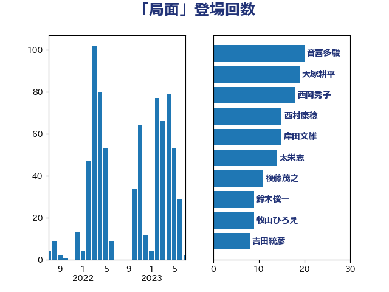

単語「局面」

| 中島克仁 | 立憲民主党 | 24 回 |
| 大塚耕平 | 国民民主党 | 21 回 |
| 長妻昭 | 立憲民主党 | 20 回 |
| 宮本徹 | 日本共産党 | 19 回 |
| 音喜多駿 | 日本維新の会 | 18 回 |
| 田村憲久 | 自由民主党 | 12 回 |
| 西村康稔 | 自由民主党 | 12 回 |
| 太栄志 | 立憲民主党 | 10 回 |
| 後藤茂之 | 自由民主党 | 9 回 |
| 西岡秀子 | 国民民主党 | 9 回 |
| 小西洋之 | 立憲民主党 | 8 回 |
| 堀内詔子 | 自由民主党 | 7 回 |
| 岸田文雄 | 自由民主党 | 7 回 |
| 森本真治 | 立憲民主党 | 7 回 |
| ながえ孝子 | 無所属 | 6 回 |
| 大島敦 | 立憲民主党 | 6 回 |
| 田村智子 | 日本共産党 | 6 回 |
| 菅義偉 | 自由民主党 | 6 回 |
| 吉田統彦 | 立憲民主党 | 5 回 |
| 柚木道義 | 立憲民主党 | 5 回 |
| 泉健太 | 立憲民主党 | 5 回 |
| 浅野哲 | 国民民主党 | 5 回 |
| 牧山ひろえ | 立憲民主党 | 5 回 |
| 舟山康江 | 国民民主党 | 5 回 |
| 赤羽一嘉 | 公明党 | 5 回 |
| 足立康史 | 日本維新の会 | 5 回 |
| 高橋千鶴子 | 日本共産党 | 5 回 |
| 中西祐介 | 自由民主党 | 4 回 |
| 伊藤俊輔 | 立憲民主党 | 4 回 |
| 安江伸夫 | 公明党 | 4 回 |
| 山井和則 | 立憲民主党 | 4 回 |
| 平木大作 | 公明党 | 4 回 |
| 林芳正 | 自由民主党 | 4 回 |
| 江田憲司 | 立憲民主党 | 4 回 |
| 石橋通宏 | 立憲民主党 | 4 回 |
| 笠井亮 | 日本共産党 | 4 回 |
| 萩生田光一 | 自由民主党 | 4 回 |
| 野田佳彦 | 立憲民主党 | 4 回 |
| 鈴木俊一 | 自由民主党 | 4 回 |
| 青山繁晴 | 自由民主党 | 4 回 |
| 青柳陽一郎 | 立憲民主党 | 4 回 |
| 佐藤茂樹 | 公明党 | 3 回 |
| 倉林明子 | 日本共産党 | 3 回 |
| 宮本周司 | 自由民主党 | 3 回 |
| 小林鷹之 | 自由民主党 | 3 回 |
| 山岡達丸 | 立憲民主党 | 3 回 |
| 山添拓 | 日本共産党 | 3 回 |
| 岩屋毅 | 自由民主党 | 3 回 |
| 斉藤鉄夫 | 公明党 | 3 回 |
| 武田良太 | 自由民主党 | 3 回 |
| 河野義博 | 公明党 | 3 回 |
| 浜口誠 | 国民民主党 | 3 回 |
| 田嶋要 | 立憲民主党 | 3 回 |
| 神田潤一 | 自由民主党 | 3 回 |
| 神谷裕 | 立憲民主党 | 3 回 |
| 福田達夫 | 自由民主党 | 3 回 |
| 茂木敏充 | 自由民主党 | 3 回 |
| 鈴木敦 | 国民民主党 | 3 回 |
| 高橋光男 | 公明党 | 3 回 |
| 中川貴元 | 自由民主党 | 2 回 |
| 丸川珠代 | 自由民主党 | 2 回 |
| 仁木博文 | 無所属 | 2 回 |
| 伊佐進一 | 公明党 | 2 回 |
| 佐藤正久 | 自由民主党 | 2 回 |
| 前原誠司 | 国民民主党 | 2 回 |
| 古屋範子 | 公明党 | 2 回 |
| 古川元久 | 国民民主党 | 2 回 |
| 吉川沙織 | 立憲民主党 | 2 回 |
| 坂本哲志 | 自由民主党 | 2 回 |
| 山田俊男 | 自由民主党 | 2 回 |
| 川合孝典 | 国民民主党 | 2 回 |
| 打越さく良 | 立憲民主党 | 2 回 |
| 末松信介 | 自由民主党 | 2 回 |
| 枝野幸男 | 立憲民主党 | 2 回 |
| 梶山弘志 | 自由民主党 | 2 回 |
| 水岡俊一 | 立憲民主党 | 2 回 |
| 河西宏一 | 公明党 | 2 回 |
| 津島淳 | 自由民主党 | 2 回 |
| 玉木雄一郎 | 国民民主党 | 2 回 |
| 田畑裕明 | 自由民主党 | 2 回 |
| 稲富修二 | 立憲民主党 | 2 回 |
| 緑川貴士 | 立憲民主党 | 2 回 |
| 羽田次郎 | 立憲民主党 | 2 回 |
| 自見はなこ | 自由民主党 | 2 回 |
| 舞立昇治 | 自由民主党 | 2 回 |
| 落合貴之 | 立憲民主党 | 2 回 |
| 蓮舫 | 立憲民主党 | 2 回 |
| 近藤和也 | 立憲民主党 | 2 回 |
| 階猛 | 立憲民主党 | 2 回 |
| 青山大人 | 立憲民主党 | 2 回 |
| 青柳仁士 | 日本維新の会 | 2 回 |
| 高橋はるみ | 自由民主党 | 2 回 |
| 高良鉄美 | 無所属 | 2 回 |
| 麻生太郎 | 自由民主党 | 2 回 |
| こやり隆史 | 自由民主党 | 1 回 |
| 三ッ林裕巳 | 自由民主党 | 1 回 |
| 三原じゅん子 | 自由民主党 | 1 回 |
| 上川陽子 | 自由民主党 | 1 回 |
| 上月良祐 | 自由民主党 | 1 回 |
| 中川正春 | 立憲民主党 | 1 回 |
| 中谷一馬 | 立憲民主党 | 1 回 |
| 中野洋昌 | 公明党 | 1 回 |
| 井上英孝 | 日本維新の会 | 1 回 |
| 伊藤信太郎 | 自由民主党 | 1 回 |
| 伊藤孝恵 | 国民民主党 | 1 回 |
| 伊藤渉 | 公明党 | 1 回 |
| 佐藤啓 | 自由民主党 | 1 回 |
| 勝部賢志 | 立憲民主党 | 1 回 |
| 古賀之士 | 立憲民主党 | 1 回 |
| 古賀友一郎 | 自由民主党 | 1 回 |
| 吉川ゆうみ | 自由民主党 | 1 回 |
| 吉田はるみ | 立憲民主党 | 1 回 |
| 堀井巌 | 自由民主党 | 1 回 |
| 堀場幸子 | 日本維新の会 | 1 回 |
| 塩川鉄也 | 日本共産党 | 1 回 |
| 塩田博昭 | 公明党 | 1 回 |
| 大串博志 | 立憲民主党 | 1 回 |
| 大石あきこ | れいわ新選組 | 1 回 |
| 大野泰正 | 自由民主党 | 1 回 |
| 太田房江 | 自由民主党 | 1 回 |
| 宮本岳志 | 日本共産党 | 1 回 |
| 小川淳也 | 立憲民主党 | 1 回 |
| 小森卓郎 | 自由民主党 | 1 回 |
| 小池晃 | 日本共産党 | 1 回 |
| 小泉進次郎 | 自由民主党 | 1 回 |
| 小熊慎司 | 立憲民主党 | 1 回 |
| 山口壯 | 自由民主党 | 1 回 |
| 山岸一生 | 立憲民主党 | 1 回 |
| 山谷えり子 | 自由民主党 | 1 回 |
| 岩渕友 | 日本共産党 | 1 回 |
| 川田龍平 | 立憲民主党 | 1 回 |
| 平井卓也 | 自由民主党 | 1 回 |
| 徳永久志 | 立憲民主党 | 1 回 |
| 志位和夫 | 日本共産党 | 1 回 |
| 斎藤アレックス | 国民民主党 | 1 回 |
| 斎藤嘉隆 | 立憲民主党 | 1 回 |
| 木原誠二 | 自由民主党 | 1 回 |
| 本田太郎 | 自由民主党 | 1 回 |
| 杉久武 | 公明党 | 1 回 |
| 杉尾秀哉 | 立憲民主党 | 1 回 |
| 東徹 | 日本維新の会 | 1 回 |
| 柘植芳文 | 自由民主党 | 1 回 |
| 柳ヶ瀬裕文 | 日本維新の会 | 1 回 |
| 柴田巧 | 日本維新の会 | 1 回 |
| 森まさこ | 自由民主党 | 1 回 |
| 森屋隆 | 立憲民主党 | 1 回 |
| 森山浩行 | 立憲民主党 | 1 回 |
| 櫛渕万里 | れいわ新選組 | 1 回 |
| 櫻井周 | 立憲民主党 | 1 回 |
| 武井俊輔 | 自由民主党 | 1 回 |
| 武見敬三 | 自由民主党 | 1 回 |
| 武部新 | 自由民主党 | 1 回 |
| 河野太郎 | 自由民主党 | 1 回 |
| 浦野靖人 | 日本維新の会 | 1 回 |
| 海江田万里 | 立憲民主党 | 1 回 |
| 湯原俊二 | 立憲民主党 | 1 回 |
| 片山さつき | 自由民主党 | 1 回 |
| 田島麻衣子 | 立憲民主党 | 1 回 |
| 田村貴昭 | 日本共産党 | 1 回 |
| 石井章 | 日本維新の会 | 1 回 |
| 石井苗子 | 日本維新の会 | 1 回 |
| 石川博崇 | 公明党 | 1 回 |
| 秋葉賢也 | 自由民主党 | 1 回 |
| 秋野公造 | 公明党 | 1 回 |
| 稲津久 | 公明党 | 1 回 |
| 藤岡隆雄 | 立憲民主党 | 1 回 |
| 藤巻健太 | 日本維新の会 | 1 回 |
| 西村智奈美 | 立憲民主党 | 1 回 |
| 西田実仁 | 公明党 | 1 回 |
| 西田昌司 | 自由民主党 | 1 回 |
| 谷川とむ | 自由民主党 | 1 回 |
| 豊田俊郎 | 自由民主党 | 1 回 |
| 越智隆雄 | 自由民主党 | 1 回 |
| 足立敏之 | 自由民主党 | 1 回 |
| 辻元清美 | 立憲民主党 | 1 回 |
| 逢坂誠二 | 立憲民主党 | 1 回 |
| 進藤金日子 | 自由民主党 | 1 回 |
| 里見隆治 | 公明党 | 1 回 |
| 重徳和彦 | 立憲民主党 | 1 回 |
| 野田聖子 | 自由民主党 | 1 回 |
| 野間健 | 立憲民主党 | 1 回 |
| 金城泰邦 | 公明党 | 1 回 |
| 鈴木憲和 | 自由民主党 | 1 回 |
| 長友慎治 | 国民民主党 | 1 回 |
| 長谷川岳 | 自由民主党 | 1 回 |
| 馬場伸幸 | 日本維新の会 | 1 回 |
| 高階恵美子 | 自由民主党 | 1 回 |
| 齋藤健 | 自由民主党 | 1 回 |